Sample Table Atoms
The sample table atom contains information for converting from media time to sample number to sample location. This atom also indicates how to interpret the sample (for example, whether to decompress the video sample and, if so, how). This section describes the format and content of the sample table atom.The sample table has an atom type of
'stbl'. It contains the sample description atom, the time-to-sample atom, the sample-to-chunk atom, the sync sample atom, the sample size atom, the chunk offset atom, and the shadow sync atom.Figure 4-23 shows the layout of the sample table atom.
Figure 4-23 The layout of a sample table atom
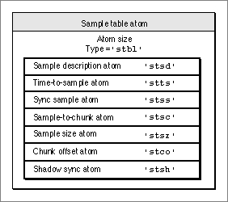
You define a sample table atom by specifying these elements:
The following sections discuss each of the atoms that may be contained in a sample table.
- Size. A long integer that specifies the number of bytes in the sample table atom.
- Type. A long integer that specifies the type of the data (defined by the
'stbl'
atom type) in the sample table atom.- Sample description. The sample description atom, described in the next section.
- Time-to-sample. The time-to-sample atom, described in "Time-to-Sample Atoms," which begins on page 4-24.
- Sync sample. The sync sample atom, described in "Sync Sample Atoms," which begins on page 4-25.
- Sample-to-chunk. The sample-to-chunk atom, described in "Sample-to-Chunk Atoms," which begins on page 4-26.
- Sample size. The sample size atom, described in "Sample Size Atoms," which begins on page 4-27.
- Chunk offset. A chunk offset atom, described in "Chunk Offset Atoms," which begins on page 4-28.
- Shadow sync. The shadow sync atom, described in "Shadow Sync Atoms," which begins on page 4-29.
Sample Description Atoms
The sample description atom stores information for the decoding of samples in the media. In the case of video media, the sample descriptions are image description structures (see the chapter "Image Compression Manager" earlier in this book for more information about image descriptions). Figure 4-24 shows the layout of the sample description atom.The sample description atom has an atom type of
'stsd'. The sample description atom contains a table of sample descriptions, each of which contains a single sample description. A media may have one or more sample descriptions, depending upon the number of different compression types used in the media. The sample-to-chunk atom identifies the sample description for each sample in the media by specifying the index into this table for the appropriate description (see "Sample-to-Chunk Atoms," which begins on page 4-26).Figure 4-24 The layout of a sample description atom
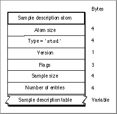
You define a sample description atom by specifying these elements:
- Size. A long integer that specifies the number of bytes in this sample description atom.
- Type. A long integer that specifies the type (defined by the atom type
'stsd') of the data in this sample description atom.- Version. A 1-byte specification of the version number of this sample description atom.
- Flags. Three bytes of space for future flags associated with it.
- Number of entries. A long integer that specifies how many entries in the sample description table are listed in the sample description table field of this atom.
- Sample description table. The sample description table, which contains a list of sample descriptions.
Time-to-Sample Atoms
Time-to-sample atoms store duration information for the samples in a media, providing a mapping from a time in a media to the corresponding data sample. The time-to-sample atom has an atom type of'stts'.You can determine the appropriate sample for any given time in a media by examining the time-to-sample atom (shown in Figure 4-25), which contains the time-to-sample atom table.
Figure 4-25 The layout of a time-to-sample atom
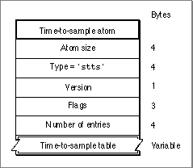
You define a time-to-sample atom by specifying these elements:
Figure 4-26 The layout of a time-to-sample table
- Size. A long integer that specifies the number of bytes in this time-to-sample atom.
- Type. A long integer that specifies the type (defined by the
'stts'atom type) of the data contained in the time-to-sample atom.- Version. A 1-byte specification of the version number of this time-to-sample atom.
- Flags. Three bytes of space for any future flags associated with this time-to-sample atom.
- Number of entries. A long integer that specifies the number of entries in the time-to-sample table.
- Time-to-sample table. The time-to-sample atom contains a table that defines the duration of each sample in the media. Each table entry contains a count field and
a duration field. The structure of the time-to-sample table is shown in Figure 4-26.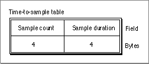
You define a time-to-sample table by specifying these entries:
Entries in the table collect samples according to their order in the media and their duration. If consecutive samples have the same duration, a single table entry may be used to define more than one sample. In these cases, the count field indicates the number of consecutive samples that have the same duration. For example, if a video media has a constant frame rate, this table would have one entry.
- Sample count. A long integer that specifies the number of consecutive samples that have the same duration.
- Sample duration. A long integer that specifies the duration of each sample.
Figure 4-27 shows an example of a time-to-sample table that is based on the data stream shown in Figure 4-22 on page 4-22. Figure 4-22 shows a total of nine samples that correspond in count and duration to the entries of the table shown in Figure 4-27. Even though samples 4, 5, and 6 are in the same chunk, sample 4 has a duration of 3, and samples 5 and 6 have a duration of 2.
Figure 4-27 An example of a time-to-sample table
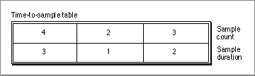
Sync Sample Atoms
The sync sample atom identifies the key frames in the media. In a media that
contains compressed data, key frames define starting points for portions of a temporally compressed sequence (see the chapter "Image Compression Manager" in this book for more information about key frames and temporal compression in video data). The
key frame is self-contained--that is, it is independent of preceding frames. Subsequent frames may depend on the key frame.Sync sample atoms have an atom type of
'stss'. The sync sample atom contains a table of sample numbers. Each entry in the table identifies a sample that is a key frame for the media. Figure 4-28 shows the layout of a sync sample atom.If no sync sample atom exists, then all the samples are key frames.
Figure 4-28 The layout of a sync sample atom
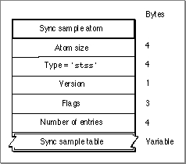
You define a sync sample atom by specifying these elements:
Figure 4-29 The layout of a sync sample table
Size. A long integer that specifies the number of bytes in this sync sample atom.- Type. A long integer that specifies the type of the data of this sync sample atom (defined by the
'stss'atom type).Version. A 1-byte specification of the version of this sync sample atom.- Flags. Three bytes of space for future flags.
- Number of entries. A long integer that specifies how many sample numbers are in the sync sample table contained in the sync sample table field.
- Sync sample table. The sync sample table (shown in Figure 4-29) consists of an array of sample numbers. Each entry in the table identifies a sample that is a key frame for the media.
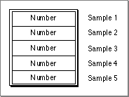
Sample-to-Chunk Atoms
As samples are added to a media, they are collected into chunks that allow optimized data access. A chunk may contain one or more samples. Chunks in a media may have different sizes, and the samples within a chunk may have different sizes. The sample-to-chunk atom stores chunk information for the samples in a media. Figure 4-30 shows the layout of the sample-to-chunk atom. By examining the sample-to-chunk atom, you can determine the chunk that contains a specific sample.Figure 4-30 The layout of a sample-to-chunk atom
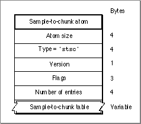
You define a sample-to-chunk atom by specifying these elements:
Figure 4-31 The layout of a sample-to-chunk table
- Size. A long integer that specifies the number of bytes in this sample-to-chunk atom.
- Type. A long integer that specifies the type of the data in this sample-to-chunk atom (defined by the
'stsc'atom type).- Version. A 1-byte specification of the version of this sample-to-chunk atom.
- Flags. Three bytes of space for future flags associated with this sample-to-chunk atom.
- Number of entries. The number of entries in the sample-to-chunk table.
- Sample-to-chunk table. Figure 4-31 shows the structure of a sample-to-chunk table. Each sample-to-chunk atom contains such a table, which identifies the chunk for each sample in a media. Each entry in the table contains a first chunk field, a samples per chunk field, and a sample description ID field. From this information, you can ascertain where samples reside in the media data.
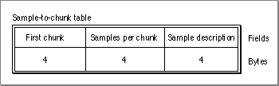
You define a sample-to-chunk table by specifying these elements:
Figure 4-32 shows an example of a sample-to-chunk table that is based on the data stream shown in Figure 4-22.
- First chunk. The first chunk number using this table entry.
- Samples per chunk. The number of samples in each chunk.
- Sample description ID. The identification number associated with the sample description containing the sample. For details on sample description atoms, see "Sample Description Atoms," which begins on page 4-23.
Figure 4-32 An example of a sample-to-chunk table
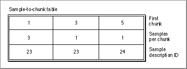
Each table entry corresponds to a set of consecutive chunks, each of which contains the same number of samples. Furthermore, each of the samples in these chunks must use
the same sample description (see "Sample Description Atoms," which begins on page 4-23). Whenever the number of samples per chunk or the sample description changes, you must create a new table entry. If all the chunks have the same number of samples per chunk and use the same sample description, this table has one entry.Sample Size Atoms
You use sample size atoms to identify the size of each sample in the media.Sample size atoms have an atom type of
'stsz'. The sample size atom (shown in Figure 4-33) contains sample size information.Figure 4-33 The layout of a sample size atom
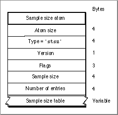
You define a sample size atom by specifying these elements:
Figure 4-34 shows the sample size table for the data stream represented in Figure 4-22 on page 4-22.
- Size. A long integer that specifies the number of bytes in this sample size atom.
- Type. A long integer that specifies the type (of atom type
'stsz') of the data in this sample size atom.- Version. A 1-byte specification of the version number of this sample size atom.
- Flags. Three bytes of space for future flags associated with the data in this sample size atom.
- Sample size. The number of bytes in the samples in the sample size table field. If all the samples are the same size, the sample size field of this atom indicates the size of all the samples. If this field is set to 0, then the samples have different sizes, and those sizes are stored in the sample size table.
- Number of entries. The number of entries in the sample size table contained in the sample size table field of this atom.
- Sample size table. The sample size table, which contains the sample size information. A sample size table contains an entry for every sample. Each table entry contains a size field. There is one table entry for each sample in the media. The table is indexed by sample number--the first entry corresponds to the first sample, the second entry is for the second sample, and so on. The size field contains the size, in bytes, of the sample in question.
Figure 4-34 An example of a sample size table
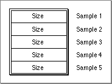
Chunk Offset Atoms
Chunk offset atoms identify the location of each chunk of data in the media's data stream.Chunk offset atoms have an atom type of
'stco'. The chunk offset atom (shown in Figure 4-35) contains a table of offset information.Figure 4-35 The layout of a chunk offset atom
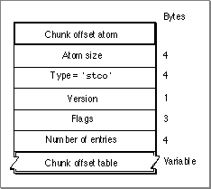
You define a chunk offset atom by specifying these elements:
Figure 4-36 shows an example of the chunk offset table for the data stream represented by Figure 4-22 on page 4-22.
- Size. A long integer that specifies the number of bytes in this chunk offset atom.
- Type. A long integer that specifies the type of the data in this chunk offset atom (defined by the atom type
'stco').- Version. A 1-byte specification of the version of this chunk offset atom.
- Flags. A 3-byte space for future flags associated with this chunk offset atom.
- Number of entries. A long integer that specifies the number of entries in the chunk offset table.
- Chunk offset table. The chunk offset table, which consists of a number of offset fields. Each entry in the chunk offset table contains an offset field. There is one table entry
for each chunk in the media. The table is indexed by chunk number--the first table entry corresponds to the first chunk, the second table entry is for the second chunk, and so on. The offset field contains the byte offset from the beginning of the data stream to the chunk.Figure 4-36 An example of a chunk offset table
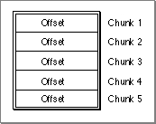
Shadow Sync Atoms
Shadow sync atoms contain self-contained samples that are alternates for existing frame difference samples. Shadow sync atoms are used to optimize random access operations on a movie. Scrubbing is an example of such a random access operation. These atoms are used to enhance playback performance. See the chapter "Movie Toolbox" in this book for details on theSetMediaShadowSyncandGetMediaShadowSyncfunctions, which allow you to create an association between a frame difference sample and a sync sample.Figure 4-37 shows the layout of a shadow sync atom. Shadow sync atoms have an atom type of
'stsh'. Each shadow sync atom contains a table with a frame difference number and a sync sample number.Figure 4-37 The layout of a shadow sync atom
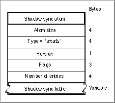
You define a shadow sync atom by specifying these elements:
Figure 4-38 The layout of a shadow sync table
- Size. A long integer that specifies the number of bytes in this shadow sync atom.
- Type. A long integer that specifies the type (defined by the atom type
'stsh') of the data in this shadow sync atom.- Version. A 1-byte specification of the version number of this shadow sync atom.
- Flags. Three bytes of space for future flags.
- Number of entries. A long integer that specifies how many entries in the shadow sync table are listed in the shadow sync table field of this atom.
- Shadow sync table. The shadow sync table, which contains the shadow sync information. The shadow sync table is shown in Figure 4-38.
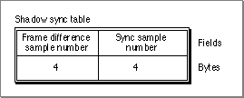
A shadow sync table contains a frame difference sample number and a sync sample number.